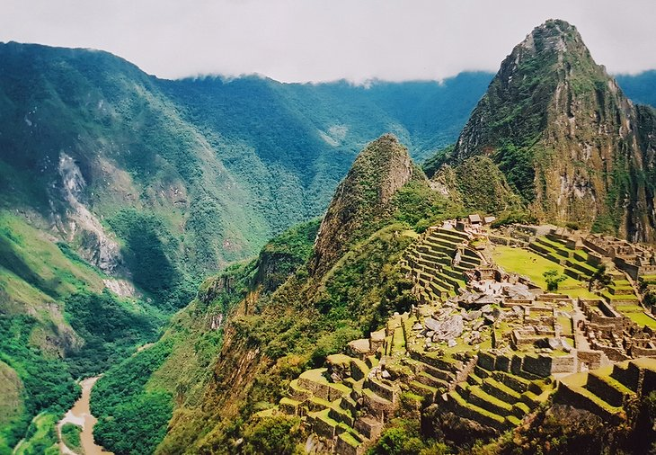

Descending from the Inca Trail into Machu Pichu at sunrise is one of life's great experiences. Not for the faint of heart, the Inca Trail is a 42-kilometer (26-mile) trek that takes you up over two 13,000-foot passes.
The trail follows the route the ancient Incas took over 650 years ago, and much of the original stonework is still in place. Along the way, you'll pass through two tunnels created by the Incas, the ancient ruin of Winay wayna, and many waterfalls.
This is a hard hike, usually done in four days in changeable weather. It can be hot and steamy, pouring rain, blazing sun, and occasionally cold. Be prepared for every weather eventuality. This is a popular route, and many hiking companies are available to choose from.
The Annapurna Circuit trail is a 17-day, 205-kilometer, (108-mile) journey through some of the tallest peaks on the planet. The trail starts down in a steamy jungle and ascends well above the tree line.
You'll top out at 5,394 meters (17,770 feet) on the Thorung Pass, where the trail is surrounded by a dazzling panorama of mountains, all over 6,096 meters (20,000 feet).
Another highlight, which can be done as an option, is Poon Hill. Most people try to make it to the top for sunrise. From this vantage point, you'll be able to see eight of the 14 highest mountain peaks in the world.
The Annapurna Circuit is a popular hike, and it demands a high level of fitness. The days and distances are long, and coupled with the high elevation, it can be tough going for some. You may want to consider hiring porters for your backpack to make your trip much more enjoyable.
Accommodation along the trail is basic as is the food; however, the wide variety of people from around the world you meet are what make the evenings enjoyable.
Another shorter trail that still allows you to see some of the highlights is the Annapurna Panorama Trek. This three- to five-day trek starts from Pokhara and heads up to Ghorepani. Rise early and make your way up Poon Hill for an unforgettable view. Accommodation and food along this stretch are both very good.

Kilimanjaro is one of the most iconic sites in all of Africa, and the hike to the top is on many people's bucket list. In fact, around 30,000 people attempt this hike each year. Depending on the route, your chances of completing the trek are pretty good.
The view from the top across the surrounding landscape is spectacular, especially at sunrise when most hikers try to summit. The hike up to the top and back down generally takes about five or six days, depending on your level of fitness and acclimatization rate.

Up and down are probably the two best words to describe the Everest Base Camp hike (EBC). This 65-kilometer, one-way trail literally climbs a mountain ridge then drops down to a river, then climbs another mountain ridge as it makes its way to base camp.
The hike takes 12 to 14 days on average and is high – you will max out at 5,500 meters (18,044 feet). That said, most of the walking is done in the 3,500- to 4,500-meter (11,482 to 4,763 feet) range. The air up here is thin, and any exertion seems twice as hard.
Be aware that you do not see the peak of Mount Everest from Base Camp. You will, however, see it from various points on the trail when other massive mountains are not in the way. The hike is best done from March to May and September to December, when temperatures are moderate, and the skies are clear.
Highlights along the way include Namchee Bazaar, the Everest View Hotel (highest hotel in the world), and the Tengboche Monastery. Accommodation along the trail is basic but comfortable and readily available. This is a well-trodden path, and you can likely find your way on your own or, if you prefer, with one of the many outfitters.

Located down at the southernmost region of Chile, the W Circuit in Torres Del Paine National Park, is one of the world's most famous hikes. Easily identifiable by the jagged towers of rock and glacial lakes, this rugged and remote region draws hikers from around the world.
Improvements in the trail and services over the past few years have made the trail more accessible – you no longer need to carry your own gear. The hike generally takes between four and six days, and the main season is December to February. Reservations are required for accommodations and camping (free at CONCAF) within the park.
Weather in Patagonia is erratic and changeable. Be prepared for rain, snow, sun, and, of course, lots of wind.